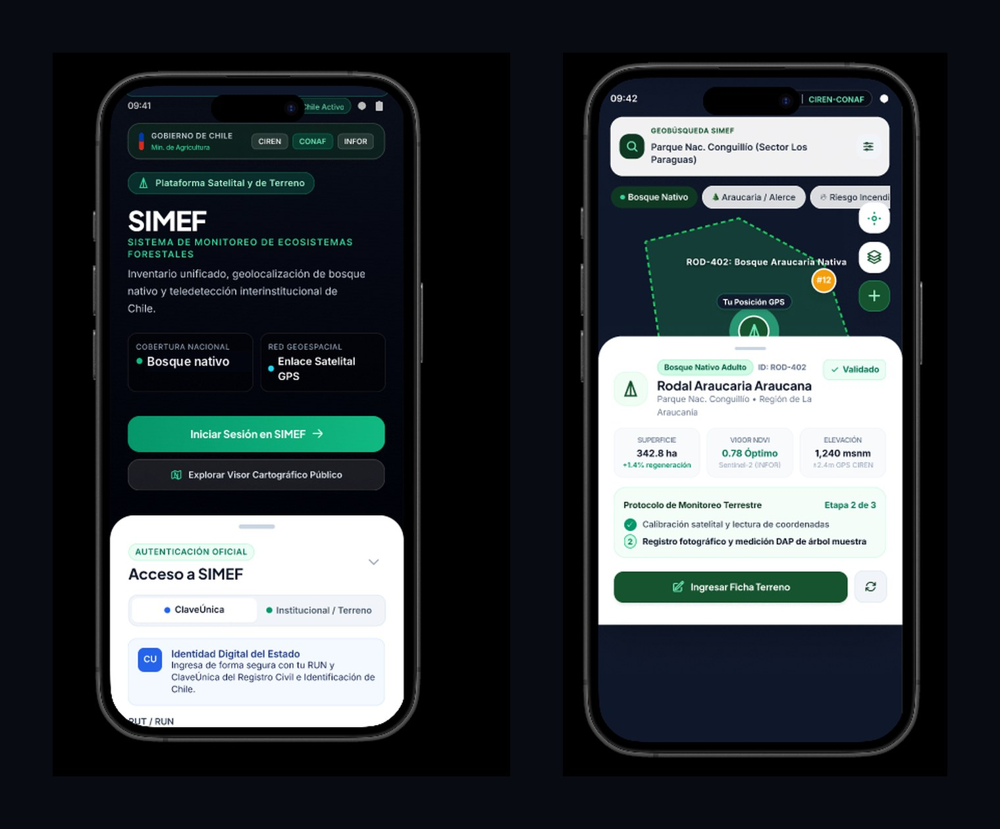

Caso de estudio UX/UI & FrontendUX/UI & Frontend case study · CIREN · CONAF · INFOR · 2024
De un prototipo de alta fidelidad validado en terreno a una arquitectura de software escalable en React + TypeScript + Vite, integrando geolocalización satelital y autenticación institucional.
From a high-fidelity prototype validated in the field to a scalable software architecture in React + TypeScript + Vite, integrating satellite geolocation and government sign-in.
Acceso oficial con ClaveÚnica o credencial institucional, y la vista de terreno: el mapa con los polígonos de cada rodal, la posición GPS del brigadista y una ficha con superficie, vigor NDVI (Sentinel-2) y elevación, más el protocolo de monitoreo paso a paso.
Official sign-in with ClaveÚnica or institutional credentials, and the field view: a map with each stand's polygon, the ranger's GPS position and a card with area, NDVI vigor (Sentinel-2) and elevation, plus the step-by-step monitoring protocol.

Primero validar con quienes usan la app en terreno; después programar sobre un diseño ya probado.
Validate with the people who use the app in the field first; then build on a design that's already proven.
Validación de valor, ergonomía y contrasteValidating value, ergonomics and contrast
Modularidad, persistencia offline y rendimientoModularity, offline persistence and performance
stack: vite + react-ts + tailwindcss + zustand
// src/components/telemetry/RodalCard.tsx interface RodalProps { id: string; especie: string; hectareas: number; ndvi: number; onSelectParcel: (id: string) => void; } export const RodalCard: React.FC<RodalProps> = ({ id, especie, hectareas, ndvi, onSelectParcel }) => ( <div className="bg-white rounded-2xl p-4 shadow-xl"> <div className="flex items-center justify-between"> <span className="text-xs font-bold text-emerald-800">{id}</span> <span className="text-[10px] bg-emerald-50 px-2 rounded"> NDVI: {ndvi} </span> </div> <h4 className="font-bold text-slate-900 mt-1">{especie}</h4> <p className="text-xs text-slate-500">{hectareas} ha nativas</p> <button onClick={() => onSelectParcel(id)} className="w-full mt-3 py-2 bg-emerald-700 text-white rounded-xl"> Ingresar Ficha Terreno </button> </div> );